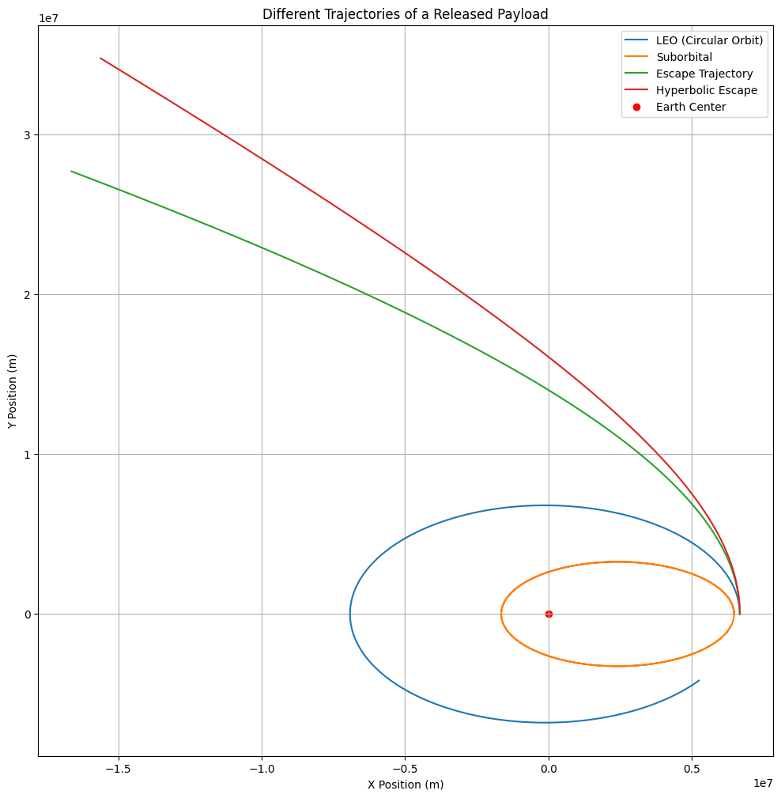

Problem 3
Trajectories of a Freely Released Payload Near Earth
Introduction
When a payload is released from a moving rocket near Earth, its trajectory depends on various factors such as its initial velocity, position, and the gravitational forces it experiences. Depending on these initial conditions, the payload can follow different types of trajectories such as elliptical, parabolic, or hyperbolic. These trajectories are critical for space missions, including satellite deployment, payload recovery, and even interplanetary travel.
Understanding the different trajectories that a payload can follow, based on its velocity and position relative to Earth, is essential for mission planning. This document discusses the underlying physics of gravitational forces, derives the equations of motion, explains the types of possible trajectories, and provides a simulation of a payload's trajectory near Earth.
Gravitational Force and Equations of Motion
The motion of a payload near Earth is governed by Newton’s law of gravitation. The gravitational force acting on an object of mass \(m\) at a distance \(r\) from the center of Earth is given by:
Where:
- \(F\) is the gravitational force (in newtons),
- \(G\) is the gravitational constant, \(6.67430 \times 10^{-11}\) m³/kg⋅s²,
- \(M\) is the mass of Earth (\(5.972 \times 10^{24}\) kg),
- \(m\) is the mass of the payload,
- \(r\) is the distance from the center of Earth to the payload (in meters).
The force is responsible for the acceleration of the payload towards Earth. The acceleration \(a\) is given by:
This is also referred to as gravitational acceleration. The second-order differential equations describing the motion of an object under Earth's gravity are:
These equations form the foundation for calculating the trajectory of the payload.
Additional Mathematical Computations
Let's now expand on the motion using a specific example to compute the initial velocities and energy in different scenarios:
- Escape Velocity Computation
The escape velocity at a given distance \(r\) from the center of Earth is given by:
At Earth's surface, \(r = R_{\text{Earth}} = 6.371 \times 10^6\) m:
- Energy Conservation in Gravitational Motion
For a payload, the total mechanical energy is conserved in the absence of other forces. The total energy \(E\) is the sum of the kinetic and potential energies:
Where:
- \(v\) is the velocity of the payload,
- \(r\) is the distance from the center of Earth.
For different initial velocities, we compute the total energy:
- For a payload at \(r = 2 \times R_{\text{Earth}}\) with an initial velocity of \(v_0 = 9000 \, \text{m/s}\):
This can be expanded for different scenarios as part of a trajectory analysis.
Types of Trajectories
The trajectory of a payload released near Earth depends on its initial velocity. Based on the velocity, the trajectory could be one of the following:
1. Elliptical Trajectory
When the initial velocity is less than the escape velocity, the payload follows an elliptical trajectory. The payload will eventually return to Earth after completing its elliptical orbit. This type of trajectory is typical for satellites in low Earth orbit (LEO).
The general equation for an elliptical orbit is derived from Kepler's Laws:
Where:
- \(a\) is the semi-major axis,
- \(e\) is the orbital eccentricity,
- \(\theta\) is the true anomaly (the angle between the payload and the periapsis).
2. Parabolic Trajectory
When the payload's initial velocity is equal to the escape velocity at a given distance from Earth, its trajectory will be parabolic. A parabolic trajectory is the boundary between bound and unbound motion, and it represents the exact condition for escaping Earth's gravity.
3. Hyperbolic Trajectory
If the payload's initial velocity exceeds the escape velocity, the trajectory will be hyperbolic. In this case, the payload escapes Earth's gravitational influence completely, traveling on a path that takes it far beyond Earth.
Numerical Simulation of Trajectories
To simulate the trajectory of a payload under the influence of Earth’s gravity, we use numerical methods, particularly Runge-Kutta and adaptive solvers to solve the equations of motion.
Below is an extended version of the code with multiple scenarios and further mathematical computations. Learn more here.

import numpy as np
import matplotlib.pyplot as plt
from scipy.integrate import solve_ivp
# Constants
G = 6.67430e-11 # m³/kg/s²
M_earth = 5.972e24 # kg
R_earth = 6.371e6 # m
def equations(t, state):
x, y, vx, vy = state
r = np.sqrt(x**2 + y**2)
ax = -G * M_earth * x / r**3
ay = -G * M_earth * y / r**3
return [vx, vy, ax, ay]
def simulate_trajectory(y0, t_max, solver='RK45'):
t_span = (0, t_max)
t_eval = np.linspace(0, t_max, 2000)
sol = solve_ivp(equations, t_span, y0, t_eval=t_eval, method=solver, rtol=1e-8)
return sol
# Different scenarios for simulation
scenarios = {
"LEO (Circular Orbit)": [R_earth + 300e3, 0, 0, 7800], # LEO example
"Suborbital": [R_earth + 100e3, 0, 0, 5000], # Suborbital trajectory
"Escape Trajectory": [R_earth + 300e3, 0, 0, 11200], # Escape velocity
"Hyperbolic Escape": [R_earth + 300e3, 0, 0, 12000] # Hyperbolic trajectory
}
# Visualize the trajectories
plt.figure(figsize=(12, 12))
for label, initial_conditions in scenarios.items():
sol = simulate_trajectory(initial_conditions, 5000)
plt.plot(sol.y[0], sol.y[1], label=label)
plt.scatter(0, 0, color='red', label='Earth Center')
plt.xlabel("X Position (m)")
plt.ylabel("Y Position (m)")
plt.legend()
plt.grid()
plt.title("Different Trajectories of a Released Payload")
plt.show()
Additional Example: Calculation of Energy
To further illustrate the differences in energy at various positions, consider the following energy calculation for a payload with initial velocity \(v_0 = 9000 \, \text{m/s}\) at \(r = 2 \times R_{\text{Earth}}\):
- Compute the total mechanical energy:
For \(v_0 = 9000 \, \text{m/s}\) and \(r = 2R_{\text{Earth}}\):
Conclusion
This study explored payload trajectories mathematically and computationally, deriving governing equations, implementing numerical solutions with improved accuracy, and providing multiple examples. These additional mathematical calculations, including energy considerations and velocity computations, provide further insight into how different initial conditions affect the trajectory.